A step-by-step drawing book for 7-year-old artists
Each character starts with simple shapes — circles, ovals, and triangles — that build into the final drawing. Follow the steps in order, draw lightly with pencil first so you can erase, and don't worry if it doesn't look perfect. Every artist's drawings look a little different, and that's what makes them special!
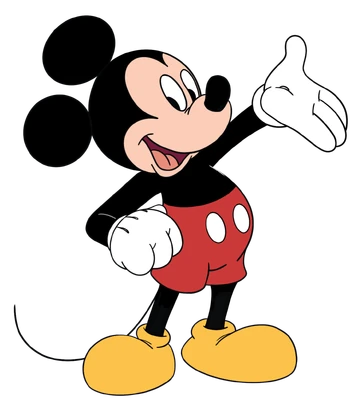
💡 Tip: Mickey's ears are always FULL circles, even when he turns his head!
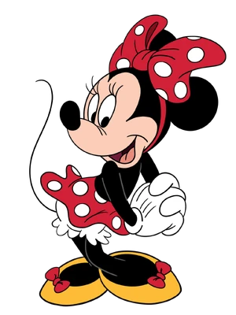
💡 Tip: Minnie's bow is usually red with white polka dots, but you can color it any color you like!
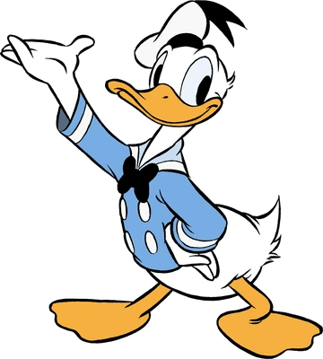
💡 Tip: Donald's hat and shirt are blue, his beak is yellow.
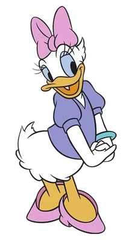
💡 Tip: Color her bow pink or purple — Daisy loves bright colors!
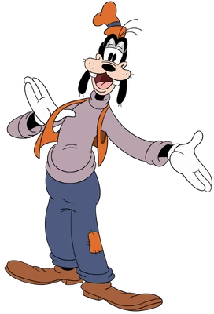
💡 Tip: Goofy's hat is green and his ears are floppy — make them really hang down!
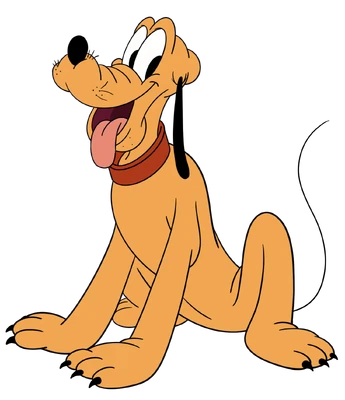
💡 Tip: Pluto is yellow-orange with a green collar. His tongue often hangs out!
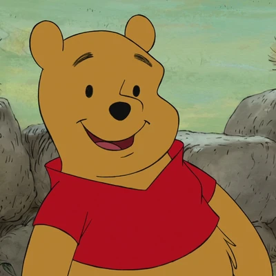
💡 Tip: Pooh's shirt is short — his round tummy shows underneath!
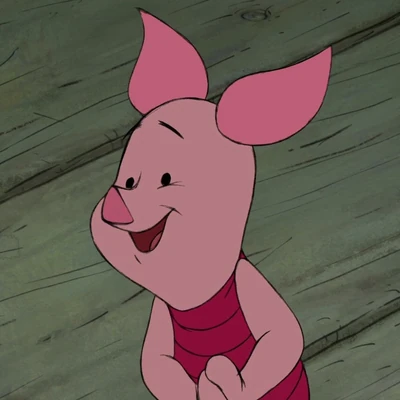
💡 Tip: Piglet is mostly pink with a magenta-striped shirt.
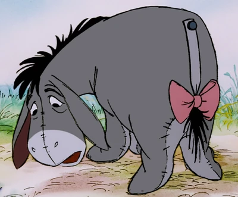
💡 Tip: Eeyore is gray-blue and always looks a little sad. His pink ribbon tail is his special accessory.
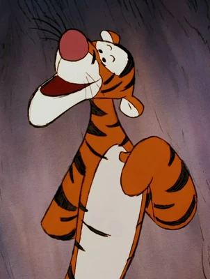
💡 Tip: Tigger is orange with black stripes — and a white belly. His stripes go in different directions!
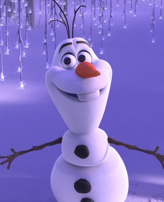
💡 Tip: Olaf is all white! Just outline him in black and color the carrot nose orange.
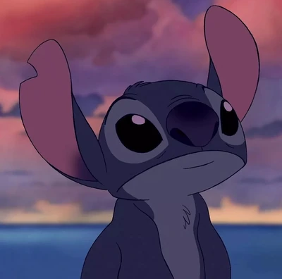
💡 Tip: Stitch is bright blue with a lighter blue tummy and pink inside his ears.
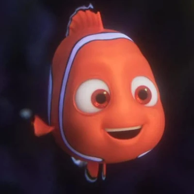
💡 Tip: Nemo is orange and white. His left fin is smaller than his right (his "lucky fin")!
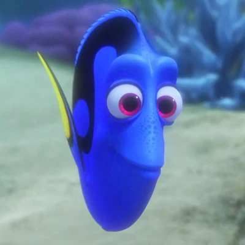
💡 Tip: Dory's body is bright blue, the stripe along her back is black, and her tail and fin tips are yellow.
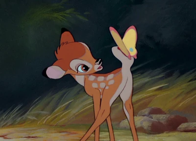
💡 Tip: Bambi is light brown with white spots and a white belly. Make his legs really thin like sticks!
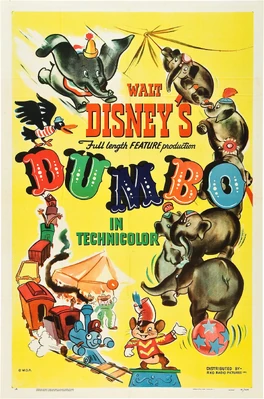
💡 Tip: Dumbo is gray. The inside of his ears is pink. The bigger the ears, the cuter he looks!
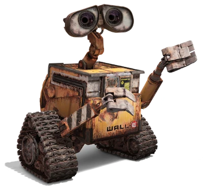
💡 Tip: WALL-E is yellow and dirty-brown. Don't worry about it being too neat — he's a hardworking robot!
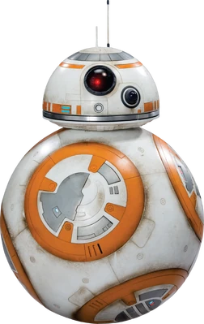
💡 Tip: BB-8 is white with orange and gray details. The body ROLLS while the head stays on top!
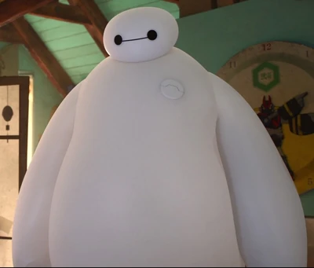
💡 Tip: Baymax is all white. His face is just two dots and a line — keep it super simple!
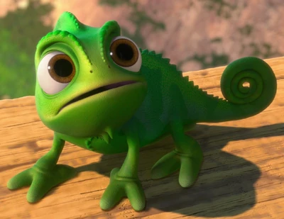
💡 Tip: Pascal is bright green and changes colors depending on his mood — try drawing him in different colors!
Once you've drawn a character with pencil, trace over the lines with your black marker. Wait for the marker to dry, then erase the pencil lines underneath. Now color it in! Try drawing the same character a few times — yours will get better and better. Keep practicing, keep creating!
Reference images from Disney Fandom Wiki. Drawing instructions written for kid-level simplicity. Disney characters © The Walt Disney Company.